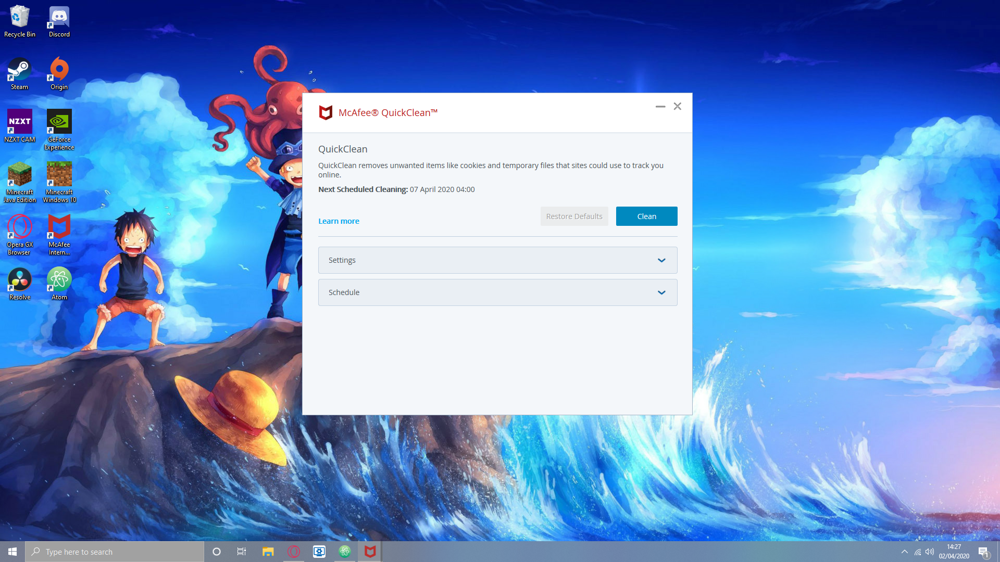
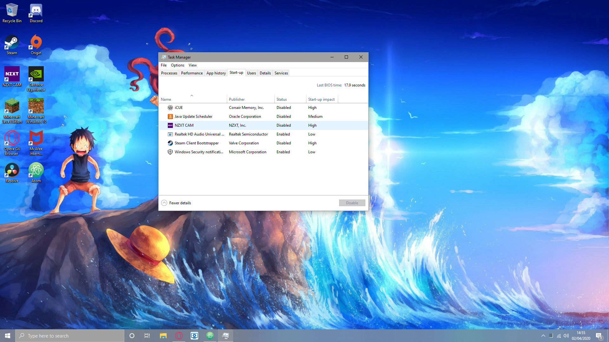

For All Your PC Gaming Information
Welcome to
Keeping Your PC clean is very important and helps keep perfomance up and helps to give your PC a long, usefull life.
The more storage that is being taken up on your PC means that your PC loses performance and become alot slower. However to get back some speed and performance you should have a program like CCleaner or McAffe Antivirus, but windows does have a built-in disk cleaner that does a fairly good job of clearing out unwanted files. This is especially important and usefull if you have a prebuilt computer or laptop that will have pre-installed bloatware. These programs also clean out cookies that can track your PC use and can slow your internet and take up valuble PC space so doing a PC cleanup at least once a week is essential. Background programs can also slow down your PC because they require extra RAM. These programs can also make your PC's startup slower so turning off startup for many of these programs will help your PC stay fast. To stop startup for programs, press crtl, alt and delete at the same time then click on task manager then click on startup and you will be able to disable startup for many programs that open on startup.
Dusting your PC and keeping it physically clean is important too because if dust accumulates in your PC it can get into important components such as fans and they could be damaged or stop workin efficintly. It can also plug up spaces that provide airflow making your PC overheat. You can get a PC duster here.
You now know how to keep your PC clean and keep it up and running smoothly